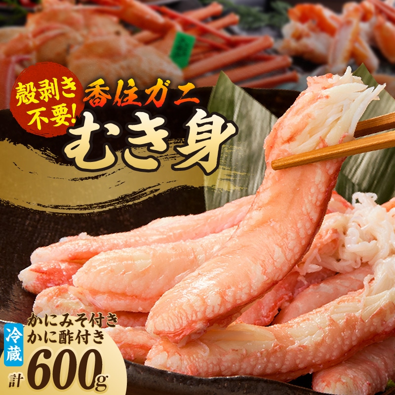
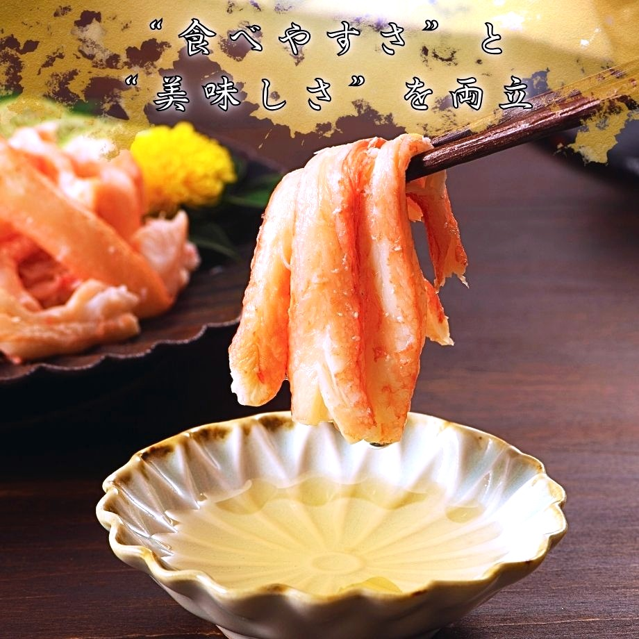
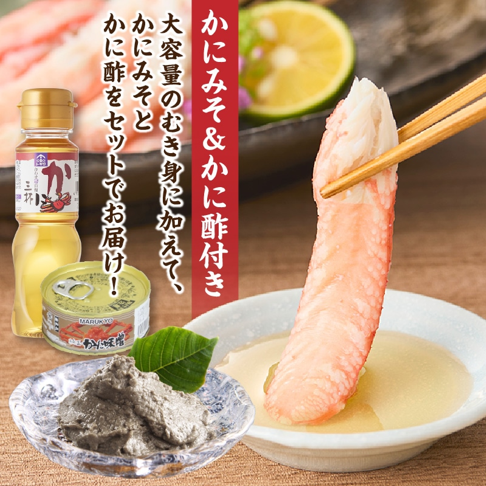
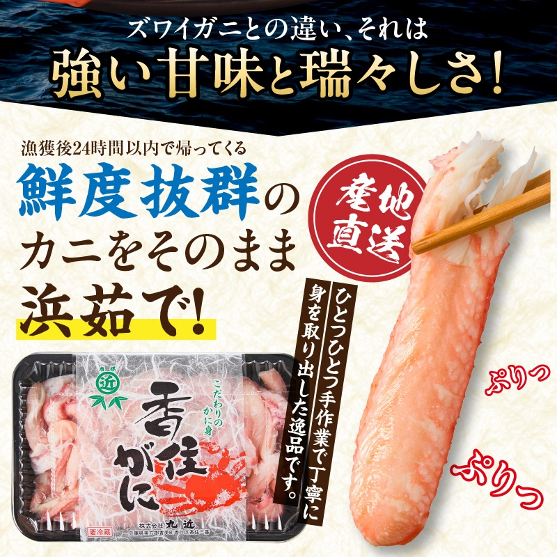
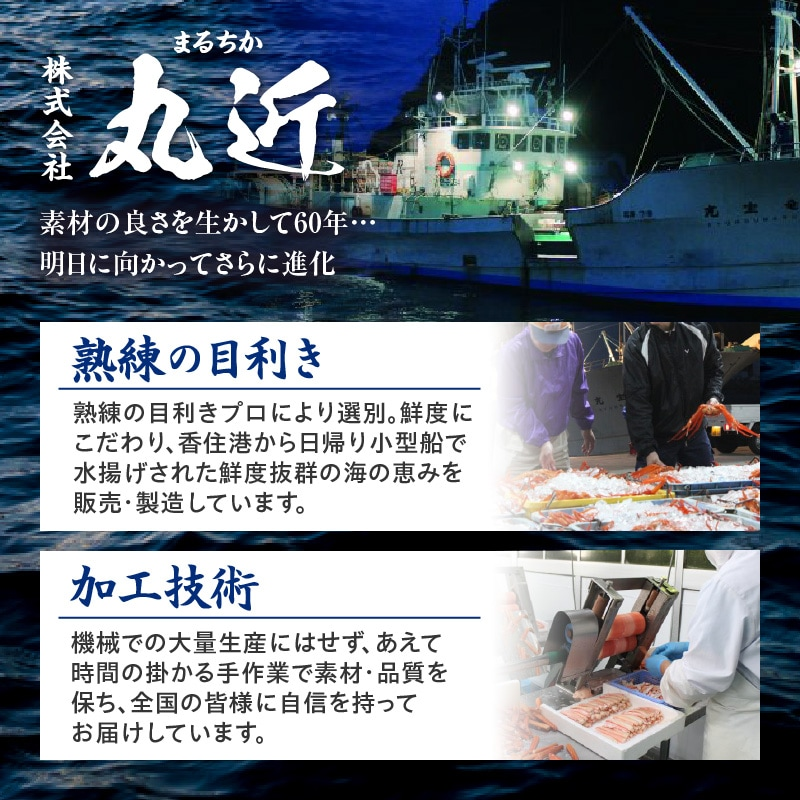
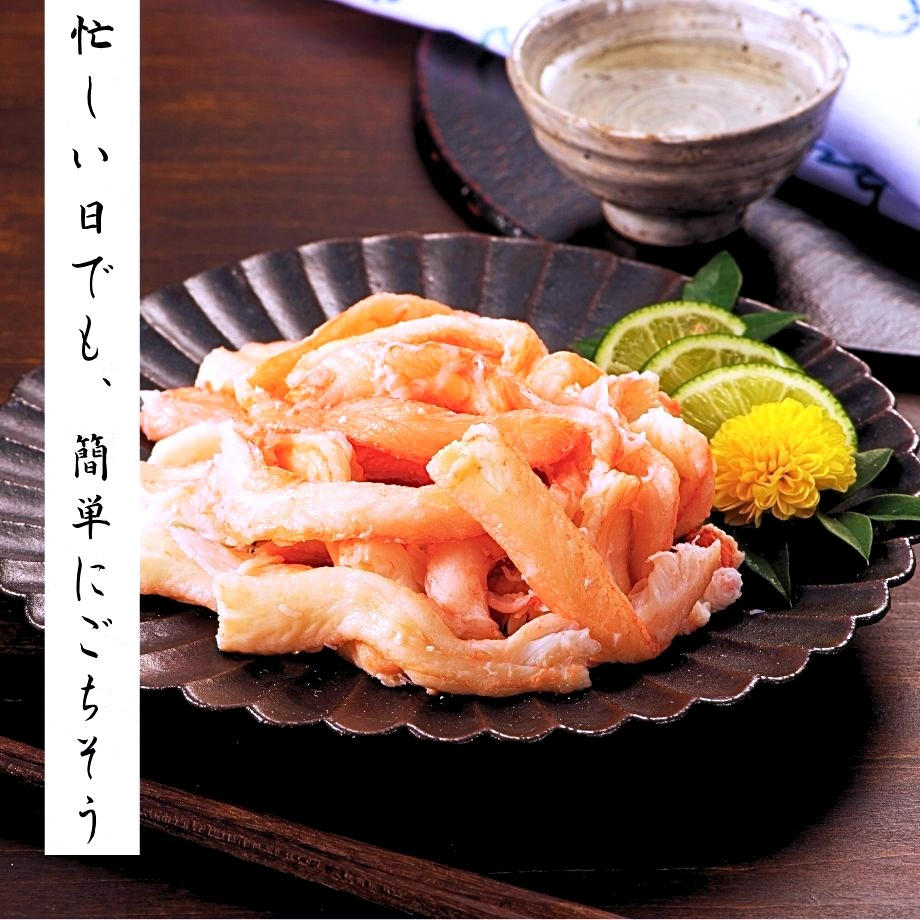
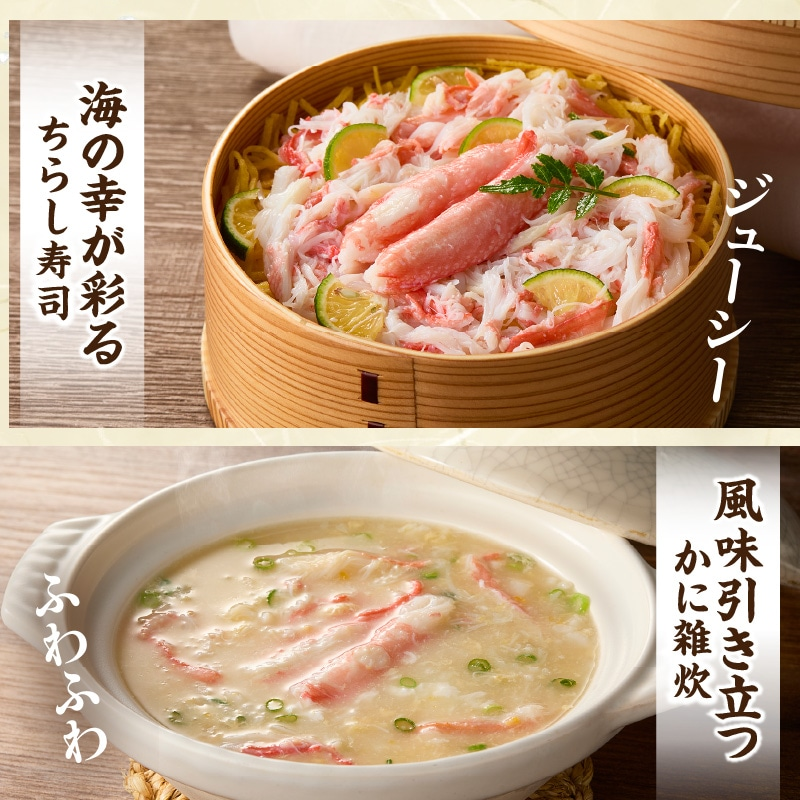
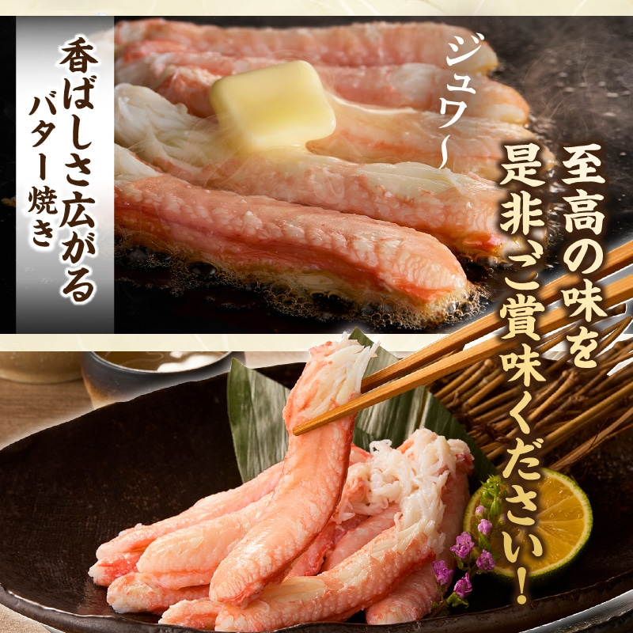
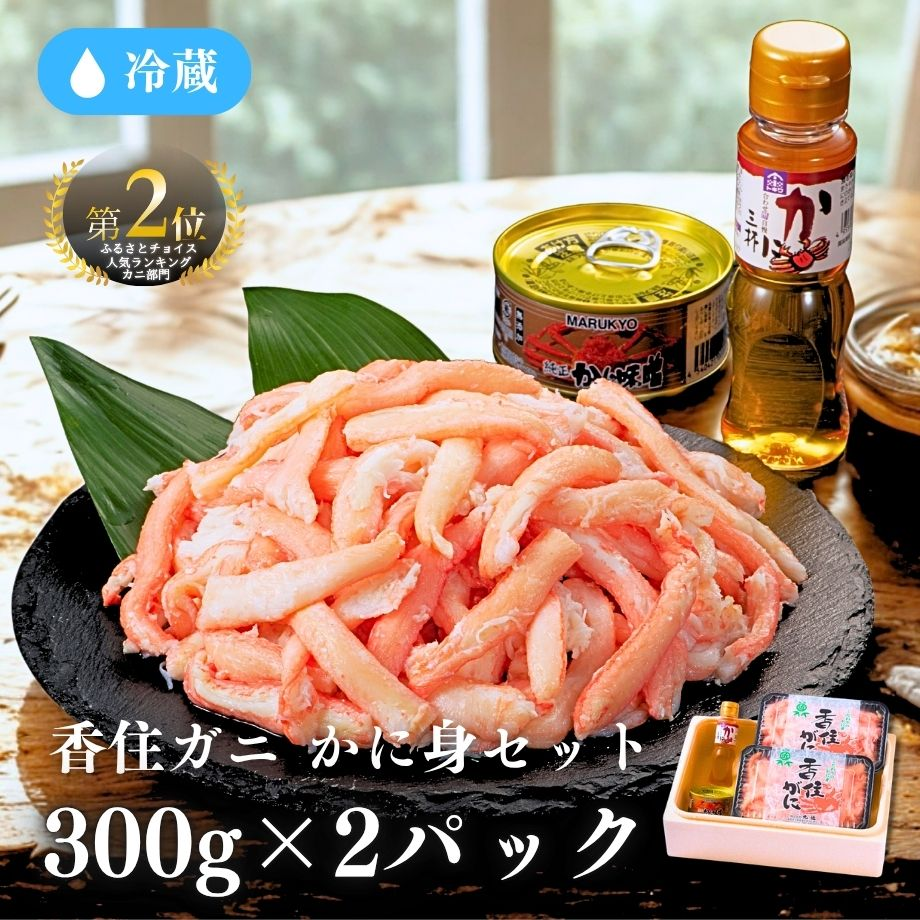
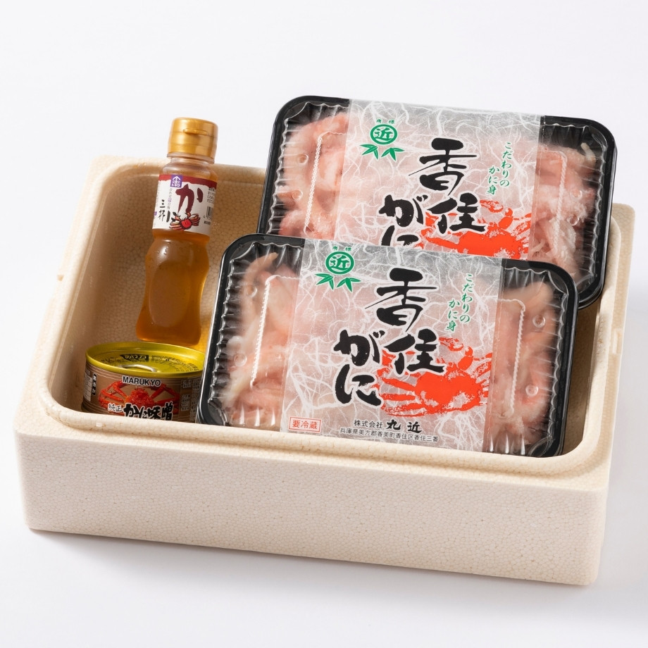

香住ガニのむき身 600g（300g×2パック）／ かに味噌・かに酢付き
冷蔵便でお届け／賞味期限：発送日より3日
こんな経験、ありませんか？
殻むきが面倒で、食べ終わる頃にはぐったり。手も汚れるし、子どもやお年寄りには食べさせにくい。
むき身を買ったら、味が薄くて水っぽかった。「カニを食べた」という満足感が、いまひとつ。
殻のゴミがかさばって、後片付けが憂うつ。せっかくのごちそうなのに、最後にひと苦労。
その悩み、香住ガニの「手むきのかに身」がまるごと解決します。

水揚げ当日に浜茹でし、職人が一つひとつ手作業でむき身に。殻むきも下ごしらえもいりません。箸ですっとつまんで、すぐに召し上がれます。棒身とほぐし身がたっぷり、カニ本来の甘みと瑞々しさをそのままに。

コク深い「かに味噌」と、さっぱり仕上がる「かに酢」をお付けしました。そのままはもちろん、お好みの味で何度でも。香住ガニ約10杯分に相当する600g（300g×2パック）の大容量だから、ご家族みんなで心ゆくまで。

兵庫県・香住港に水揚げされるベニズワイガニ、それが地域ブランド「香住ガニ」。日帰りの小型船漁で運ばれるため鮮度が高く、ズワイガニにはない強い甘みと、みずみずしい旨みが特長です。漁獲後24時間以内に帰港し、その鮮度のまま浜茹でにしています。

香住は、香住ガニ・松葉ガニ・セコガニが揚がる、関西屈指のカニの郷。なかでも香住ガニ漁は9月に解禁され、長い漁期を通じて水揚げされます。豊富な水揚げのなかから、身入りと甘みののった一杯を、熟練の目利きが選び抜きます。

水揚げから15時間以内に競りにかけ、鮮度を保ったまま即日出荷。一般的なカニ漁とくらべ、圧倒的なスピードで食卓へ。

機械での大量生産にはせず、あえて手間のかかる手作業で。創業60年、丸近の目利きと技で素材の良さを引き出します。

鮮度抜群のうちに浜茹でし、冷蔵のまま産地直送。冷凍特有の水っぽさがなく、解凍も不要。届いたその日からおいしく。
漁獲後24時間以内に帰港、水揚げから競り・出荷まで最短15時間。冷凍せず冷蔵でお届けするから、澄んだ甘みがそのまま。
兵庫県・香住港に水揚げされた香住ガニ（ベニズワイガニ）だけを使用。甘みの強さが自慢の地域ブランドです。
機械任せにせず、一つひとつ手作業でむき身に。棒身もほぐし身も、丸近の職人がていねいに取り出しています。
殻むき不要・解凍不要。開けてそのまま食卓へ。かに味噌・かに酢付きで、味の変化も楽しめます。
まずはそのまま、かに酢で。慣れたら、お好みのひと品に。大容量だから、いろんな食べ方を楽しめます。

ほぐし身を酢飯に散らせば、海の幸が彩るちらし寿司に。だしに溶けば、ふわふわのかに雑炊。

さっとバターで焼けば、香ばしさが立ちのぼる一品に。アヒージョや炒め物にもよく合います。
器に盛るだけで、立派なごちそう。あつあつのご飯にのせれば、ぜいたくなかに丼の完成です。
※画像は調理イメージです。本商品は冷蔵・加熱済みのため、そのままお召し上がりいただけます。
実際に「香住ガニ かに身セット」をご購入いただいた、お客様のレビューより。総合評価★4.86。
塩味が強くなく、冷凍されていないからか、カニの甘みを感じられてとてもおいしい。殻をむく手間がないので、そのままはもちろん、アヒージョや蟹味噌グラタンにしても最高でした。リピートしたいです。
40代 女性 ／ 2025.09
ボイルのむき身は味が薄いかな？というイメージでしたが、しっかりとカニでおいしかったです。予想以上に量もたっぷりで、いろんなカニ料理を楽しめました。来年もお願いできれば。
40代 女性 ／ 2025.11
ボリュームもあり、カニ大好きの子供に大人が譲ることなく大満足でした（笑）。殻むきがないので子どもにも食べさせやすく、家族みんなで楽しめました。
30代 女性 ／ 2025.12
棒身とほぐし身とのことでしたが、ほぼ棒身で良い意味でビックリ。プリッとした食感で、かに酢につけて食べると甘みが引き立ちます。かに味噌も濃厚でした。
50代 男性 ／ 2026.01
殻のゴミが出ないのが何よりうれしい。後片付けが本当に楽でした。お年寄りの両親にも食べやすいと好評で、また注文します。
40代 男性 ／ 2026.01
300gが2パックに分かれているので、使い切りやすくて便利。1パックはそのまま、もう1パックはかに丼にしました。甘くてジューシーで大満足です。
30代 女性 ／ 2026.02
※当店に寄せられたお客様レビューより抜粋し、一部表記を整えて掲載しています。
ふるさとチョイス
人気ランキング カニ部門
香住ガニ約10杯分。
300g×2パックの大容量
素材の良さを生かして。
丸近の目利きと手しごと


| 商品名 | 香住ガニ かに身セット（むき身） |
|---|---|
| 価格 | 6,800円 （税込み） |
| 内容量 | かに身 600g（300g×2パック） かに味噌・かに酢付き |
| 原材料 | ベニズワイガニ（兵庫県産）、食塩 |
| 産地 | 兵庫県・香住港 水揚げ（香住ガニ） |
| 加工者 | 株式会社 丸近 |
| 賞味期限 | 発送日より3日間 |
| 保存方法 | 要冷蔵（0〜5℃） |
| お届け | 冷蔵便（産地直送） |
| アレルギー | かに ※同一工場でえび・小麦・いかを含む製品を製造しています。 |
ふるさとチョイス カニ部門 第2位。
開けてそのまま、香住ガニのかに身を心ゆくまで。
かに身600g（300g×2パック）・かに味噌・かに酢付き／冷蔵便／賞味期限：発送日より3日
ボタンを押すと、株式会社 丸近の公式オンラインショップ（kani-mrck.com）へ移動します。